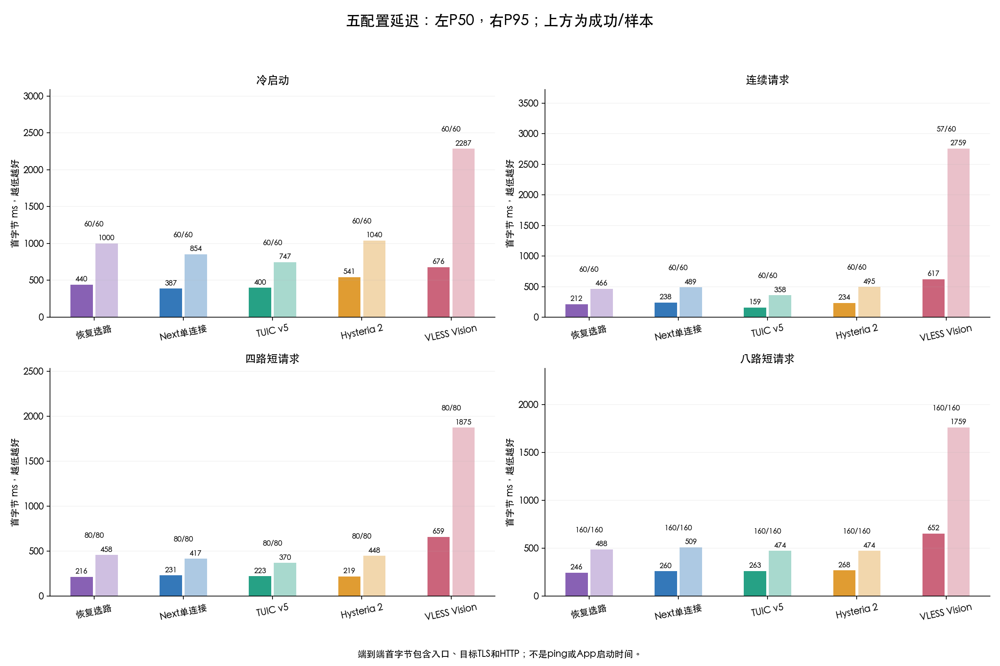
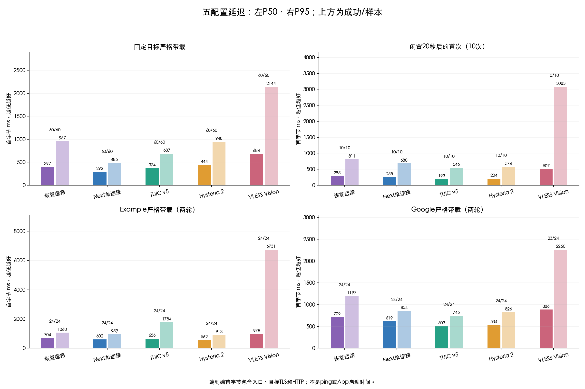

2026-11-23 · HONOR TFY-AN00 / Android12 · 同一Wi-Fi原生核心
| 配置 | 实际组合 | 服务端/补充参数 |
|---|---|---|
| 恢复选路 | Next双QUIC通道＋TLS、自适应RecoveryAware | 冻结Next原型，BBR；预算/副本/合并关闭 |
| Next单连接 | Next单QUIC通道＋TLS | 同Next服务器，BBR |
| TUIC v5 | QUIC＋TLS | CatNode V2Core/Mihomo；BBR，0RTT/FastOpen关闭 |
| Hysteria 2 | QUIC＋TLS | CatNode V2Core/Mihomo；未填Brutal速率，默认BBR路径，无obfs |
| VLESS Vision | TCP＋TLS＋XTLS Vision，VLESS无额外加密 | CatNode V2Core/Mihomo；系统TCP拥塞控制见环境记录；不是REALITY |
每组新客户端并重启对应测试服务，冷却5秒；只有当前测试入口启动。证书校验开启，临时根证书仅用于测试程序，不装到系统。固定目标为同VPS上的HTTPS服务，相同证书及域名；临时hosts映射保证CatNode目标嗅探后可解析。两台服务器分别用于速度/延迟，不跨服务器合成总分。业务是TCP/HTTPS和TCP回显，未测试UDP业务中继、人工丢包、切网或耗电；QUIC入口不等于已验收UDP业务。端口和顺序平衡仍不能消除全部源端口、路径和时段影响；服务器原有业务未停用，公网和CPU不是完全隔离的实验室环境。
Next原型与CatNode完整核心的调度/dispatcher/limiter开销不同；QUIC的BBR也不是同一实现与窗口。VLESS基于TCP，无法据本结果分离传输、拥塞算法与实现效果。串行场景恢复配置未必建立第二通道，差异不能全部归因恢复选路。恢复只为新流避让本端发包判丢/RTT恶化的入口，既有业务不迁移/重放，没有新增服务器下行恢复反馈。
测试不调参，不采逐包或选路日志，不删除或替换慢轮。仅测量工具增加收到前缀的SHA256校验及严格带载等待上限15秒，协议核心未改；竞态和静态检查已通过。相同测量工具覆盖全部五组。
带载覆盖修正：初版测量工具的带载分支只选QUIC，跳过VLESS TCP。旧带载记录已归档且不参与五组排名；带载/真实网站全部五组用修正后的同一工具重新采集于独立latency-loaded阶段。冷/热、并发和闲置覆盖正确，继续保留。两种工具只在带载测量选择和帮助文本不同，协议核心和服务器未改；不将两个阶段混算同一指标。
修正后带载冻结计划 · 带载与网站全部CSV · 带载汇总 · 按场景合并展示的汇总


| 场景 | 配置 | 成功/样本 | P50 ms | P95 ms | 最大 ms | 缺失记录 |
|---|---|---|---|---|---|---|
| 冷启动 | 恢复选路 | 60/60 | 440.10 | 999.54 | 1700.53 | 0 |
| 冷启动 | Next单连接 | 60/60 | 386.89 | 853.80 | 1206.27 | 0 |
| 冷启动 | TUIC v5 | 60/60 | 400.01 | 747.22 | 868.79 | 0 |
| 冷启动 | Hysteria 2 | 60/60 | 541.36 | 1039.85 | 1478.47 | 0 |
| 冷启动 | VLESS Vision | 60/60 | 675.66 | 2287.48 | 2914.58 | 0 |
| 连续请求 | 恢复选路 | 60/60 | 212.48 | 465.64 | 677.78 | 0 |
| 连续请求 | Next单连接 | 60/60 | 238.44 | 488.98 | 969.71 | 0 |
| 连续请求 | TUIC v5 | 60/60 | 158.59 | 357.67 | 589.86 | 0 |
| 连续请求 | Hysteria 2 | 60/60 | 233.70 | 495.42 | 657.40 | 0 |
| 连续请求 | VLESS Vision | 57/60 | 617.01 | 2759.08 | 6874.60 | 0 |
| 四路短请求 | 恢复选路 | 80/80 | 216.20 | 457.97 | 602.31 | 0 |
| 四路短请求 | Next单连接 | 80/80 | 230.86 | 416.70 | 589.58 | 0 |
| 四路短请求 | TUIC v5 | 80/80 | 222.56 | 369.85 | 473.88 | 0 |
| 四路短请求 | Hysteria 2 | 80/80 | 218.63 | 448.22 | 673.91 | 0 |
| 四路短请求 | VLESS Vision | 80/80 | 658.87 | 1875.30 | 3038.51 | 0 |
| 八路短请求 | 恢复选路 | 160/160 | 245.75 | 488.07 | 1483.43 | 0 |
| 八路短请求 | Next单连接 | 160/160 | 260.09 | 508.77 | 706.59 | 0 |
| 八路短请求 | TUIC v5 | 160/160 | 262.57 | 474.40 | 845.12 | 0 |
| 八路短请求 | Hysteria 2 | 160/160 | 268.38 | 474.18 | 1147.65 | 0 |
| 八路短请求 | VLESS Vision | 160/160 | 652.11 | 1758.82 | 4452.51 | 0 |
| 固定目标严格带载 | 恢复选路 | 60/60 | 396.65 | 956.76 | 1235.79 | 0 |
| 固定目标严格带载 | Next单连接 | 60/60 | 292.29 | 485.48 | 941.93 | 0 |
| 固定目标严格带载 | TUIC v5 | 60/60 | 373.78 | 686.69 | 1375.16 | 0 |
| 固定目标严格带载 | Hysteria 2 | 60/60 | 443.83 | 948.14 | 1131.77 | 0 |
| 固定目标严格带载 | VLESS Vision | 60/60 | 683.95 | 2144.28 | 5478.75 | 0 |
| 闲置20秒后的首次（10次） | 恢复选路 | 10/10 | 285.30 | 810.77 | 810.77 | 0 |
| 闲置20秒后的首次（10次） | Next单连接 | 10/10 | 254.84 | 680.14 | 680.14 | 0 |
| 闲置20秒后的首次（10次） | TUIC v5 | 10/10 | 193.47 | 545.74 | 545.74 | 0 |
| 闲置20秒后的首次（10次） | Hysteria 2 | 10/10 | 204.28 | 573.50 | 573.50 | 0 |
| 闲置20秒后的首次（10次） | VLESS Vision | 10/10 | 507.50 | 3082.68 | 3082.68 | 0 |
| Example严格带载（两轮） | 恢复选路 | 24/24 | 704.25 | 1059.91 | 1282.80 | 0 |
| Example严格带载（两轮） | Next单连接 | 24/24 | 601.82 | 959.23 | 1004.18 | 0 |
| Example严格带载（两轮） | TUIC v5 | 24/24 | 656.33 | 1783.89 | 1870.01 | 0 |
| Example严格带载（两轮） | Hysteria 2 | 24/24 | 562.43 | 912.55 | 1023.13 | 0 |
| Example严格带载（两轮） | VLESS Vision | 24/24 | 977.58 | 6731.47 | 7442.20 | 0 |
| Google严格带载（两轮） | 恢复选路 | 24/24 | 709.12 | 1196.93 | 2380.99 | 0 |
| Google严格带载（两轮） | Next单连接 | 24/24 | 618.67 | 854.42 | 995.28 | 0 |
| Google严格带载（两轮） | TUIC v5 | 24/24 | 503.01 | 745.24 | 876.25 | 0 |
| Google严格带载（两轮） | Hysteria 2 | 24/24 | 534.00 | 825.59 | 1232.27 | 0 |
| Google严格带载（两轮） | VLESS Vision | 23/24 | 885.51 | 2259.54 | 2317.83 | 0 |
| 场景 | 配置 | 全部前台成功 | 严格样本数 | 背景完整文件 |
|---|---|---|---|---|
| mixed/mixed | 恢复选路 | 60/60 | 60 | 20/20 |
| mixed/mixed | Next单连接 | 60/60 | 60 | 20/20 |
| mixed/mixed | TUIC v5 | 60/60 | 60 | 20/20 |
| mixed/mixed | Hysteria 2 | 60/60 | 60 | 20/20 |
| mixed/mixed | VLESS Vision | 60/60 | 60 | 20/20 |
| web-example/mixed | 恢复选路 | 24/24 | 24 | 4/4 |
| web-example/mixed | Next单连接 | 24/24 | 24 | 4/4 |
| web-example/mixed | TUIC v5 | 24/24 | 24 | 4/4 |
| web-example/mixed | Hysteria 2 | 24/24 | 24 | 4/4 |
| web-example/mixed | VLESS Vision | 24/24 | 24 | 4/4 |
| web-google/mixed | 恢复选路 | 24/24 | 24 | 4/4 |
| web-google/mixed | Next单连接 | 24/24 | 24 | 4/4 |
| web-google/mixed | TUIC v5 | 24/24 | 24 | 4/4 |
| web-google/mixed | Hysteria 2 | 24/24 | 24 | 4/4 |
| web-google/mixed | VLESS Vision | 23/24 | 24 | 4/4 |
冷启动每请求新建客户端/入口，连续请求复用入口但新建目标TLS。主项冷/热各60次、四路短请求80次、八路160次；固定带载前台60次，闲置只取每轮20秒后的首次10次。真实网站每组24次。失败单列，不挤入成功延迟分位数；主项期望数按尝试的计划计算，缺失单列。
带载背景2×2MiB，等待两条各收256KiB或最多15秒，再发前台；只有请求开始时两条都就绪且至少一条仍活跃才进入严格样本。全部前台结果、背景完整校验数一并列出。背景可能较早完成或未达到就绪阈值，所以严格样本数可不同。未满足资格不是丢弃失败，原记录仍保留。真实网站前台替换域名，背景不变。闲置10样本P95等于最大值，不能判断长期概率；不是切网测试。
冻结计划与二进制SHA256 · 完整顺序和时间线 · 汇总JSON · 全部CSV · 按整轮配对探索性重采样 · 验证与清理 · 复现说明
仅一台安卓、一个Wi-Fi、指定两个VPS，正式App/TUN、其他网络、长期可用性、耗电和隐蔽性尚未由本实验验证。十轮仍有限，探索性区间不作正式显著性声明，未做多重比较校正。正式数据不混入早期部署预检失败或历史成绩；所有已测慢轮和错误保留。